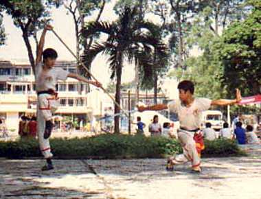

|
|
|
The Origins of Vietnamese Traditional Martial Arts
|
 |
Võ-Thuật Cổ-Truyền Việt-Nam
Di sản truyền thống thượng võ, bất khuất của dân tộc Việt
Nam. |
Man since prehistoric times has mainly survived either gathering, picking foods
readily available in the nature or hunting wild animals. The movements of watching, chasing and killing
became more familiar daily. Next , there were circumstances where he had to resolve the relations
between man and animal in the hunt, between man and man to protect himself, or to keep what he had
labored for, his right on the land, in the forest area he was living on.
Thereafter, the man was to manage the relations between man and animal in hunting,
between man and man in the self-defense and the protection of the fruits of work or the defense of the property right
of the territory and the corner of forest where he lived. All these movements, all these behaviors, as simple as complex,
were the origin of the techniques of the schools of martial arts in the world.
From that difficult past of creating and preserving
their country from the beginning of that era to the resistance agains the invaders, the preserve of the boundaries,
the protection of the entire land.
Vietnamese people in the territory of the Red River ( Hong Ha ) have formed,
developed and combined precious experiences on techniques for individual combat, as well as strategies to use
and mobilize military forces in collective combat: "War".
The techniques for individual combat, the base for the military forces who protect
the country, are the real, deep-set source of the traditional, rich, multifold martial arts of Vietnamese heroes.
|
|
Characteristics of the traditional Vietnamese martial arts:
|
|
Vietnam, a narrow piece of land with few habitants, lies right next to a giant
feudal country in the North, which is always ready to annex and assimilate Vietnam into one of its countries. With
the will of a free independent country and their invincible patriotism the Vietnamese have developed a strong fighting
spirit, which can be seen in the deceiving wars:
|
|
To escape from the humiliating misery and hardships of slavery, we have to win the enemy! |
Because of these always urgent and real demands for the fate of their country,
more than anybody else the Vietnamese researched and invented unique techniques adaptable to the characteristics
of the country, its people, and to the level of development of their technology, society and economy.
Those techniques of combat were sufficient to oppose and stop the tyrannical invasion of foreign countries.
The brutal hoofs of the horses of the disdainful Mongolian, cavalry had savagely trampled
so many lands in Asia to create an immense empire from the Black Sea to the Pacific Ocean.
However, they failed and collapsed on this tiny piece of land!!!
|
|
This story seemed impossible to believe ? Unfortunately for them, it is truth ..!! |
And that truth was confirmed when the "Invincible" Mongolians had to swallow their hatred and
retreat with disgrace after the second and third strikes. The whole Vietnamese nation had firmly decided to fight back,
accepting all sacrifices and losses.
Those glorious victories belonged to the whole nation. With their icon will "Eliminate the Mongolians",
their valiant offenses, and their sanctity, the brave-fleet army had bravely fought and won glorious victorious. From the real
war experiences, the creative, characteristic technique of Vietnamese are confirmed as correct, applicable and more efficient.
|
|
Tinh-Hoa của Võ-Thuật Cổ-Truyền
Việt-Nam |
|
Võ thuật cổ truyền Việt Nam là "Võ Trận".
Võ
thuật cổ truyền Việt Nam là một thể hiện cho ý chí sắt đá, xã thân, vì nước
quên mình của dân quân đất Việt. Võ thuật cổ truyền Việt Nam là một thể hiện của tinh thần: |
Nhu chế cương.
Ðoản chế Trường. |
| 1. Võ thuật cổ truyền Việt Nam là VÕ
TRẬN
|
| Võ thuật cổ truyền Việt Nam được gọi
là "Võ Trận" với ý nghĩa là võ thuật để dùng trong chiến trận để chống giặc
giử nước. "Võ Trận" Việt Nam thể hiện đầy sinh
động trong tính cách quyết chiến, quyết thắng : đó là một lối đánh tiêu diệt, dứt
khoát một mất một còn, không khoan nhượng của cả một dân tộc để giử yên bờ
cõi, bảo vệ biên cương Tổ quốc. |
2. Võ thuật cổ truyền Việt Nam là một thể
hiện cho ý chí sắt đá,
xã thân, vì nước quên mình của dân quân đất Việt. |
| Cuộc kháng chiến hào hùng của dân quân
nước Việt từ ngàn xưa trước một đối phương phương Bắc rộng lớn tựa như
một hình tượng đầy sinh động sau đây: |
| " Nực cười châu chấu đá xe . . . " |
| Thế nhưng, những con người ở vùng đất
châu thổ sông Hồng nhỏ bé đã chứng minh một sự thực oanh liệt, bao lần đậm nét
trong những trang sử hào hùng của dân tộc : |
| " Tưởng rằng chấu ngã, ai ngờ xe nghiêng . . . ." |
| Hiện thực đó chỉ có thể có
được với một tinh thần thượng võ cao độ, đầy sức thuyết phục: |
Lấy đại nghĩa để thắng hung tàn,
Ðem chí nhân để thay cường bạo.
(Bình Ngô Ðại Cáo - Nguyễn Trãi.) |
| Và một truyền thống bất khuất, sắt đá: |
Tôi muốn cỡi cơn gió mạnh, đạp luồng sóng dữ,
chém cá kình
ở biển khơi, đánh đuổi quân Ngô giành lại giang sơn,
cởi ách nô lệ, chứ tôi không chịu khom lưng làm tỳ thiếp người
(Lời Bà Triệu Trinh Nương.) |
| Chấp nhận thử thách, đương đầu với
gian khổ, mất mác đau thương. Người dân Việt đã chấp nhận hy sinh tất cả để
giành lấy quyền sống tự do, độc lập cho đất nước: |
Ta thà làm quỷ nước Nam,
Còn hơn làm Vương đất Bắc.
(lời của Tướng Trần Bình Trọng trong buổi tiệc đầu người,
nơi trại giặc.) |
| Tất cả là thể hiện một đặc thù
nổi bật nhất về ý chí quên mình, xã thân cho đại nghĩa dân tộc của Võ thuật
Cổ truyền Việt Nam hình thànn trong quá trình dựng nước và giử nước. |
3. Võ thuật cổ truyền Việt Nam là một thể
hiện thực sự cho tính
Nhu chế Cương, Ðoản chế Trường. |
Trong thực tế chiến đấu, làm sao có thể
lấy ít đánh nhiều, lấy yếu đánh mạnh?
Người dân Việt, lấy cá nhân mà xét, lấy tập
thể mà tính, là yếu kém hơn nhiều so với các thế lực phương Bắc. Nếu chỉ thuần
dựa trên ý chí và tinh thần mà không có được một sách lược đối phó thích
hợp, một phương cách đối trị hữu hiệu, làm sao có thể ngăn cản được các
âm mưu xâm lược thâm độc của giặc ngoại xâm ?
Dân tộc Việt Nam đã có được những kinh nghiệm quý báu qua thực tiển
chiến đấu giành lấy quyền sống còn, cởi bỏ xiềng xích nô lệ ngoại bang với những
thể hiện sáng tạo trong võ thuật cổ truyền, một trang bị không thể không có cho đoàn
dân quân nước Việt, áp dụng linh động và triệt để 2 nguyên lý căn bản: |
| A. Nhu chế Cương |
| Vì yếu hơn nên không thể dùng lực đối lực. Dân quân nước Việt
luônluôn phải đối phó với một lực lượng quân sự phương Bắc đông đảo
gấp bội, về chiến thuật cũng như chiến lược, vì ít hơn nên ta phải làm sao nhanh chóng
giải quyết chiến trường, tiết kiệm sức lực, bằng cách luồn lách, tránh né, mềm dão,
hư thực. Trong công có thủ, trong thủ đã tiềm ẩn thế tấn công vào nơi địch sơ
hở, bỏ trống. |
| B. Đoản chế Trường |
Áp dụng cho cá nhân người chiến sỉ và cho
cả tập thể lực lượng kháng chiến, chống giặc giử nước, người dân nước
Việt luôn xử dụng những chiến thuật thần tốc, chớp nhoáng, không mất thì giờ và công
sức để triệt phá sức tấn công của đối phương mà chỉ cần nhanh chóng tránh né,
tiếp cận, khám phá những sơ hở nhất định của chúng để dứt khoát, dũng mãnh
tấn công tiêu diệt ngay chính tiềm năng của sức tấn công ấy: đó là ý nghĩa của tinh
thần dùng Đoản chế Trường .
Võ thuật cổ truyền Việt Nam là những tinh hoa kế thừa bao kinh nghiệm xương
máu và tim óc của tổ tiên bao đời : đó là một sự thực hiển nhiên không thể
phủ nhận được và đừng bao giờ khinh suất coi thường.
Cùng với quá trình giao lưu văn hóa, kinh tế với nước ngoài. Người dân
Việt cũng luôn tìm hiểu và học hỏi những tinh hoa cốt lõi nhất của họ để có
được những cách đánh năng động, sáng tạo và có hiệu quả nhất đối với
giặc xâm lược:
Học lấy cái hay của địch để có thể tìm ra được cách đánh
thích hợp nhất chế ngự được địch, đó là cách "Dỉ độc trị độc" hoặc còn có thể gọi là
: "Gậy ông đập lưng ông".
Dung hợp những điều hay của địch thành những kinh
nghiệm quý báu của mình, giúp cho kho tàng truyền thống đất Việt thêm phong phú, đa dạng,
nhưng vẩn luôn hài hòa thuần phác, đó là tinh thần của "Tri
kỷ tri bỉ" (biết người biết ta trăm trận trăm thắng).
Võ thuật cổ truyền Việt Nam luôn thắm đượm tinh thần cao đẹp
đó và đã thể hiện trọn vẹn bản sắc độc đáo, anh hùng của dân tộc.
Bề dầy lịch sử anh hùng hơn 4 ngàn năm dựng nước và giử nước cho phép chúng ta
hiểu được như vậy và khẳng định tầm vóc vô cùng to lớn đó. |
Xin đừng bao giờ nhầm lẩn, chớ khi nào
quên cội nguồn sâu xa đó
Hãy ra sức giử gìn và kế thừa sao cho xứng đáng. |
|